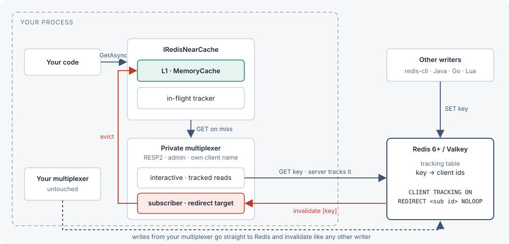
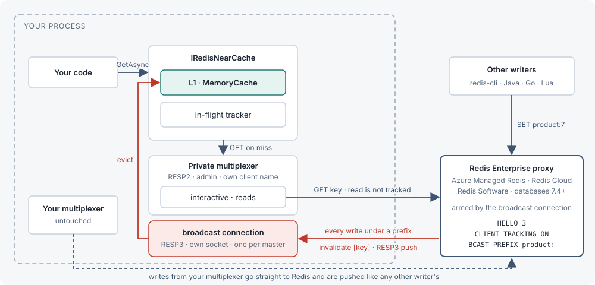

Introduction #
A near cache for .NET whose entries are invalidated by the Redis server itself.
RedisNearCache keeps an in-process copy (an L1) of the Redis values your application reads, and lets the Redis server tell you when one of them changes, using the CLIENT TRACKING feature Redis 6 introduced.
Redis remembers which keys each tracked connection has read, and when any client writes one of those keys it pushes a message naming it, and the local copy is thrown away. Nothing in the write path has to cooperate: a Java service, a Go job, or someone at redis-cli all invalidate you the same way.

IConnectionMultiplexer is never touched, reconfigured, or depended on.Why server-assisted beats a backplane
FusionCache and the proposed HybridCache backplane solve staleness with an application-level pub/sub channel that the writer publishes to. That only works when every writer uses the same library and remembers to publish. A writer in another language or process silently leaves readers stale. Server-assisted tracking moves the responsibility to the one place every write already passes through: Redis itself. Any client, in any language, doing a plain SET or DEL (or redis-cli by hand) causes Redis to push an invalidation, with no cooperation required from writers.
Requirements
| Requirement | Detail |
|---|---|
| Redis server | Redis 6 or newer, or Valkey, reached directly (any version that implements CLIENT TRACKING). |
| Redis Enterprise-based services (Azure Managed Redis, Redis Cloud, Redis Software) | Supported with TrackingMode.Broadcast (databases 7.4+, the versions on which they support client-side caching). See Redis Enterprise, Azure Managed Redis, Redis Cloud. |
| Garnet | Not supported. Garnet does not implement CLIENT TRACKING. |
| .NET | .NET 8 or .NET 10. |
| StackExchange.Redis | 3.2.0 (pinned; see Directory.Packages.props). |
| Your own connection | No special requirements. Any protocol (RESP2 or RESP3), no admin mode needed. |
| RedisNearCache's private connection | Opened by RedisNearCache itself, forced to RESP2 with admin mode (AllowAdmin=true) and its own client name. Required for CLIENT TRACKING and CLIENT LIST, and because StackExchange.Redis 3.x swallows RESP3 invalidation push frames. In TrackingMode.Broadcast, a separate RESP3 connection per master carries the invalidations instead. |
dotnet add package RedisNearCacheOne package for the core near cache. RedisNearCache.HybridCache is a separate, optional package covered in HybridCache and IDistributedCache.
Quickstart #
Install the package, register the cache, and watch an outside write invalidate it.
1. Install
Add the package to your project.
dotnet add package RedisNearCache2. Register and resolve
Register IRedisNearCache against a connection string and resolve it from DI. Await Ready once at startup so the invalidation subscription and the initial tracking arm have completed before you rely on the cache being coherent.
using Microsoft.Extensions.DependencyInjection;
using RedisNearCache;
var services = new ServiceCollection();
services.AddRedisNearCache("localhost:6379");
await using var provider = services.BuildServiceProvider();
var cache = provider.GetRequiredService<IRedisNearCache>();
// Wait for the invalidation subscription and initial arming to complete.
await cache.Ready;3. Write, then read
SetAsync writes through to Redis and evicts any local copy. The first GetAsync<T> after that is always a miss: it fetches from Redis, stores the value in L1, and arms server-side tracking for that key. Every read after that is served from L1 with no network call, until the key is invalidated.
await cache.SetAsync("user:42", new { Name = "Ada" });
var user = await cache.GetAsync<User>("user:42"); // miss: reads Redis, populates L1, arms tracking
var again = await cache.GetAsync<User>("user:42"); // hit: served from L1, no network call
await cache.RemoveAsync("user:42");
if (cache.TryGetLocal<User>("user:42", out var local))
{
// local is only set if the key is currently cached in L1; Redis is never touched.
}
record User(string Name);4. See an invalidation from redis-cli
Read a key so it is cached, then change it from a completely different client, one that knows nothing about RedisNearCache. The very next read reflects the new value, because Redis itself pushed the invalidation.
# in another terminal, or from any language's Redis client
redis-cli SET user:42 '{"Name":"Grace"}'Back in your application, the next GetAsync<T>("user:42") is a miss (it goes to Redis to re-populate L1 and re-arm tracking) and returns Grace. Every read after that is a hit again, until the next external write.
Console.WriteLine(cache.Statistics);
// hits=1 misses=1 invalidations=0 flushes=0 rearms=0 raceDiscards=05. Check the stats
Statistics exposes six cumulative, thread-safe counters. See Operations for what to watch in production.
How it works #
The private connection, one-shot tracking, NOLOOP writes, and the in-flight guard.
Why not an app-level backplane
FusionCache and the proposed HybridCache backplane solve staleness with pub/sub that the writer publishes to. That only works when every writer uses the same library. Server-assisted tracking moves the responsibility to the one place every write already passes through.
The parts
RedisNearCache opens one private StackExchange.Redis multiplexer, cloned from your connection settings with Protocol=Resp2, AllowAdmin=true and a unique client name. Under RESP2 that multiplexer has two connections per Redis node: an interactive connection, used for the actual GET/SET calls, and a subscriber connection, which RedisNearCache tells Redis to redirect invalidations to (CLIENT TRACKING ON REDIRECT <subscriber id>). The subscriber subscribes to __redis__:invalidate and turns each incoming message into an eviction from L1.
One-shot tracking
Tracking is one-shot per key: after Redis sends an invalidation for a key, it forgets that key was being tracked until the connection reads it again. Every GetAsync<T> miss re-arms tracking for that key by reading it over the tracked interactive connection.
sequenceDiagram
autonumber
participant App as Your code
participant NC as RedisNearCache
participant L1
participant I as interactive conn
participant S as subscriber conn
participant R as Redis
participant W as Any writer
App->>NC: GetAsync("user:42")
NC->>L1: TryGet
L1-->>NC: miss
NC->>NC: inflight.Begin(user:42)
NC->>I: GET user:42
I->>R: GET user:42
Note over R: remembers user:42 was read by this connection
R-->>I: value v1
I-->>NC: value v1
NC->>NC: invalidated while in flight? no
NC->>L1: Set(user:42, v1)
NC-->>App: v1
App->>NC: GetAsync("user:42")
NC->>L1: TryGet
L1-->>NC: hit
NC-->>App: v1 (no network)
W->>R: SET user:42 v2
R->>S: message __redis__:invalidate [user:42]
Note over R: forgets user:42 for this connection (one-shot)
S->>NC: KeyInvalidated(user:42)
NC->>L1: Remove(user:42)
App->>NC: GetAsync("user:42")
NC->>L1: TryGet
L1-->>NC: miss
NC->>I: GET user:42
I->>R: GET user:42
Note over R: tracks user:42 again
R-->>NC: value v2
NC->>L1: Set(user:42, v2)
NC-->>App: v2
NOLOOP
Writes made through RedisNearCache’s own SetAsync/RemoveAsync are armed with NOLOOP, so Redis does not echo them back as invalidations; RedisNearCache evicts its own L1 entry for the key directly around the write instead.
The in-flight guard
Because an invalidation can arrive between sending a GET and storing its reply, RedisNearCache keeps an in-flight guard: each read records a version token before the request goes out, and the reply is only stored in L1 if no invalidation for that key was seen in the meantime. A stale reply is still returned to the caller (it was correct when read); it is simply not cached, and Statistics.RaceDiscards counts it.
sequenceDiagram
participant NC as RedisNearCache
participant L1
participant R as Redis
participant W as Any writer
NC->>NC: token = inflight.Begin(k) (version 7)
NC->>R: GET k
R-->>NC: v1 (in transit)
W->>R: SET k v2
R->>NC: invalidate [k]
NC->>NC: inflight.MarkInvalidated(k) (version 8)
NC->>L1: Remove(k) (nothing there yet)
Note over NC: reply v1 arrives
NC->>NC: WasInvalidated(k, token)? version 8 ≠ 7 → yes
NC->>NC: discard v1, Statistics.RaceDiscards++
Note over NC: return v1 to the caller (it was true when read); next read fetches v2
Reconnects, the part that actually needs care
Tracking is per-connection state on the server. The spike showed two silent failure modes, both handled by re-arming and flushing.
| What breaks | What the server does | What we do |
|---|---|---|
| Interactive connection drops and reconnects | New connection, tracking off (TRACKINGINFO flags=off, redirect=-1). Reads succeed untracked. | On ConnectionRestored(Interactive): re-issue CLIENT TRACKING ON REDIRECT, flush L1. |
| Subscriber connection drops and reconnects | New client id. The interactive connection still redirects to the dead id. Invalidations vanish with no error. | On ConnectionRestored(Subscription): look up the new id in CLIENT LIST, TRACKING OFF then ON REDIRECT <new id>, flush L1. |
| Any connection failed, not yet restored | Nothing can be trusted. | Flush L1; serve from Redis until re-armed. |
sequenceDiagram
participant A as TrackingArmer
participant L1
participant I as interactive conn (id 26)
participant S as subscriber conn (id 27 → 58)
participant R as Redis
Note over R: redirect target for id 26 is 27
R-xS: connection killed
S->>R: reconnect, CLIENT ID = 58
Note over R: id 26 still redirects to dead 27
S-->>A: ConnectionRestored(Subscription)
A->>L1: Clear() (anything missed is gone)
A->>R: CLIENT LIST (via interactive)
R-->>A: our subscriber = 58
A->>R: CLIENT TRACKING OFF
A->>R: CLIENT TRACKING ON REDIRECT 58
R-->>A: OK
A-->>L1: Armed(SubscriptionRestored)
Per-endpoint state
stateDiagram-v2
[*] --> Unarmed
Unarmed --> Arming: StartAsync / find subscriber id
Arming --> Armed: TRACKING ON REDIRECT ok
Arming --> Arming: subscriber not visible yet, backoff retry
Armed --> Lost: ConnectionFailed (either type)
Lost --> Arming: ConnectionRestored
Armed --> Arming: ConnectionRestored (server dropped or re-pointed)
note right of Armed: L1 trusted
note right of Lost: L1 flushed, reads pass through
Cluster
Client ids and tracking tables live on each node, and a node sends invalidations only for keys it owns. The private multiplexer already keeps an interactive and a subscriber connection per master, so the armer repeats the same dance per node with that node’s subscriber id.
flowchart LR
subgraph P[private multiplexer]
direction TB
A1[interactive → 7100]
S1[subscriber id 11]
A2[interactive → 7101]
S2[subscriber id 7]
A3[interactive → 7102]
S3[subscriber id 7]
end
subgraph C[cluster]
N1[(master 7100
slots 0-5460)]
N2[(master 7101
slots 5461-10922)]
N3[(master 7102
slots 10923-16383)]
end
A1 -- "TRACKING ON REDIRECT 11" --> N1
A2 -- "TRACKING ON REDIRECT 7" --> N2
A3 -- "TRACKING ON REDIRECT 7" --> N3
N1 -. "invalidate spike:c1" .-> S1
N2 -. "invalidate spike:c3" .-> S2
N3 -. "invalidate spike:c2" .-> S3
What was ruled out, and why
| Option | Finding |
|---|---|
| Use your existing multiplexer | Every CLIENT TRACKING and CLIENT LIST call needs allowAdmin, and every read on it would be tracked, cache or not. |
| RESP3 push messages (the 3.x default) | StackExchange.Redis collapses to one connection and drops the invalidate pushes. Server says tracking is on; zero messages arrive. |
| Lua to bypass admin mode | CLIENT TRACKING is flagged noscript. |
OPTIN / CLIENT CACHING YES | Would need to decide, before every read, whether to track it — before the library knows whether the key is cacheable. Ruled out in favour of OPTOUT: the connection is armed OPTOUT, and a read outside KeyPrefixes is preceded by CLIENT CACHING NO inside a MULTI/EXEC, which keeps the two commands adjacent on the wire even on a multiplexed connection. |
| Raw-socket sidecar per node | Superseded: this is now built as TrackingMode.Broadcast, an own RESP3 connection per master armed with CLIENT TRACKING ON BCAST PREFIX, for Redis Enterprise-based services, whose proxy rejects tracking on RESP2 and rejects REDIRECT under RESP3. |
| Redis Enterprise-based services (Azure Managed Redis, Redis Cloud, Redis Software) | Their proxy hides the subscriber connection from CLIENT LIST and rejects REDIRECT, so the redirect design above cannot arm there; supported instead through TrackingMode.Broadcast. |
| Garnet | Does not implement CLIENT TRACKING. Redis 6+ and Valkey do. |
Configuration #
Two ways to register the cache, and every option on RedisNearCacheOptions.
AddRedisNearCache has two overloads. Both register IRedisNearCache as a singleton together with the private connection, the tracking armer, and the invalidation listener it depends on.
services.AddRedisNearCache("localhost:6379");The convenience overload takes a connection string directly and sets RedisNearCacheOptions.ConnectionString.
services.AddRedisNearCache(options =>
{
options.ConnectionString = "localhost:6379";
options.KeyPrefixes.Add("user:");
options.L1MaxAge = TimeSpan.FromMinutes(5);
});The full overload takes an Action<RedisNearCacheOptions> and lets you set every option, including Configuration (a ConfigurationOptions instance) instead of a plain connection string. Either Configuration or ConnectionString must end up set; resolving IRedisNearCache without one throws InvalidOperationException.
RedisNearCacheOptions
| Property | Default | What it does |
|---|---|---|
Configuration | null | ConfigurationOptions for the Redis deployment. RedisNearCache clones this and forces Protocol=Resp2, AllowAdmin=true and its own ClientName. Either this or ConnectionString must be set. |
ConnectionString | null | Alternative to Configuration; parsed with ConfigurationOptions.Parse. |
KeyPrefixes | empty | Key prefixes that RedisNearCache will cache locally. Once this is non-empty, a read of a key outside it is sent as CLIENT CACHING NO immediately followed by GET (inside a MULTI/EXEC, so the two stay adjacent on the wire), so it is neither stored in L1 nor tracked by the server: writes to it push no invalidation. Empty (the default) means every key read through RedisNearCache is cached and tracked; see the FAQ for keys you want out of tracking entirely while KeyPrefixes stays empty. |
TrackingMode | TrackingMode.Redirect | How invalidations reach this instance. Redirect (default) for Redis and Valkey servers reached directly. Broadcast for Redis Enterprise-based services (Azure Managed Redis, Redis Cloud, Redis Software), which combine with KeyPrefixes. See Redis Enterprise, Azure Managed Redis, Redis Cloud. |
L1SizeLimit | 10_000 | Maximum number of entries held in L1. Least-recently-used entries are evicted beyond this. |
L1MaxAge | 5 minutes | Safety net: an L1 entry is dropped after this age even if no invalidation arrived. Protects against a missed invalidation. Set to Timeout.InfiniteTimeSpan to disable. |
RespectServerTtl | true | On every miss, read the key's remaining TTL (PTTL, pipelined with the GET: one extra command, no extra round trip) and never keep the L1 entry past it, capped at L1MaxAge if that is shorter. Redis only pushes an expiry invalidation once its active-expiry cycle actually deletes the key, which can lag the TTL deadline by minutes on a large keyspace; with this on, a value is never served locally after its TTL has elapsed. Off means the entry lives until an invalidation arrives or L1MaxAge drops it. |
Serializer | JsonRedisNearCacheSerializer.Instance | Serializer for values. Defaults to System.Text.Json; string and byte[] are passed through untouched. |
ClientNamePrefix | "rnc" | Prefix for the Redis client name RedisNearCache sets on its own connections. A unique suffix is appended. |
using System.Text.Json;
services.AddRedisNearCache(options =>
{
options.ConnectionString = "localhost:6379";
options.Serializer = new JsonRedisNearCacheSerializer(new JsonSerializerOptions
{
PropertyNamingPolicy = JsonNamingPolicy.CamelCase
});
});Serializer customisation
The default JsonRedisNearCacheSerializer uses System.Text.Json, with string and byte[] passed through untouched (no double-encoding, which matters for the IDistributedCache adapter). Pass your own JsonSerializerOptions to the constructor, or implement IRedisNearCacheSerializer directly for a non-JSON format.
Managed services #
Where RedisNearCache runs, which tracking mode each platform needs, and how TrackingMode.Broadcast works on Redis Enterprise-based services.
Supported platforms
| Platform | Tracking mode | How it is tested |
|---|---|---|
| Redis 6+ (self-hosted, Docker, Kubernetes) and Valkey | Redirect (the default) | In CI on Redis 6.2, 7.0, 7.2, 7.4, 8 and Valkey 8.1: standalone, replica, TLS, cluster and Sentinel. Broadcast also works there and runs in the same CI jobs. See Testing. |
| Azure Managed Redis, Redis Cloud, Redis Software (databases 7.4+) | Broadcast, with KeyPrefixes set. Access keys or Microsoft Entra ID tokens; see Entra ID. | In CI against Redis Software in Docker (enterprise-up.sh), the same proxy those services run. Not yet run against a real Azure or Redis Cloud instance in CI; set RNC_ENTERPRISE_REDIS to run the Enterprise suite against one. |
| Azure Cache for Redis (the older OSS-based Basic, Standard and Premium tiers), node-based Amazon ElastiCache (Redis OSS, Valkey) | Redirect | Their constraints (disabled admin commands, a hostname-announcing cluster) are emulated in CI; not tested against the real services. Set RNC_EXTERNAL_REDIS to run a check against one. |
| ElastiCache Serverless | Not supported | It disables CLIENT TRACKING, CLIENT CACHING, CLIENT TRACKINGINFO, CLIENT LIST and CLIENT ID. See Limitations. |
| Garnet | Not supported | It does not implement CLIENT TRACKING. |
Redis Enterprise, Azure Managed Redis, Redis Cloud
The proxy in front of these Redis Enterprise-based services (databases 7.4+, the versions on which they support client-side caching) rejects tracking outright on RESP2 (ERR Client tracking is not supported when using RESP2), rejects REDIRECT under RESP3 with a syntax error, and its CLIENT LIST does not show RedisNearCache’s subscriber connection — so the default Redirect mode cannot arm there at all. Arming now fails with a clear error telling you to set TrackingMode.Broadcast, rather than a bare server exception.
services.AddRedisNearCache("my-cache.region.redis.azure.net:10000,ssl=true,password=<access-key>", o =>
{
o.TrackingMode = TrackingMode.Broadcast;
o.KeyPrefixes.Add("product:");
});In Broadcast, RedisNearCache opens one small RESP3 connection of its own per master — TLS and auth taken from the same connection settings as the private multiplexer, client name <private client name>-bcast — and sends HELLO 3 followed by CLIENT TRACKING ON BCAST PREFIX <p> for every entry of KeyPrefixes. That connection then receives an invalidation push for every write or delete under those prefixes from any client, whether or not this instance holds the key; FLUSHDB and FLUSHALL arrive as the null invalidation and flush L1 like anywhere else. Reads still go through the private multiplexer, unchanged. Replicas are not pre-armed in this mode — there is no redirect target to keep warm across a promotion — so a newly promoted master gets its own broadcast connection at the next topology check (every 5 s).

Broadcast the reads are not tracked; the broadcast connection receives a push for every write under KeyPrefixes, whether or not this instance read the key. Compare the default Redirect mode in How it works.If the broadcast connection dies — the socket closes, or a keepalive PING sent every 10 s goes unanswered for 5 s — the cache goes pass-through for that endpoint, reconnects with the same fast ladder (100 ms, 300 ms, 1 s, 1 s, then every 5 s), re-arms, and flushes L1: the existing “any reconnect on any master means re-arm then flush” rule applies here exactly as it does to the interactive/subscriber pair in Redirect mode.
NOLOOP cannot apply here: it suppresses pushes for writes made by the tracking connection itself, and the broadcast connection never writes. So this instance’s own SetAsync and RemoveAsync (sent on the private multiplexer) echo back as pushes. That is harmless for coherence — the facade already evicts the key around its own write — but it means a GetAsync issued right after a SetAsync can have its reply discarded once by the in-flight rule when the echo lands between the GET reply and the store; the read after that caches the key.
The CLIENT CACHING NO transaction that Redirect sends for reads outside KeyPrefixes is skipped in Broadcast: the reading connection was never tracked, so a plain GET is already untracked. Set KeyPrefixes: leaving it empty is legal but means every write in the database is broadcast to this client (logged once as a warning), and a prefix that overlaps another already configured one is dropped with a log line, because Redis rejects overlapping prefixes for one client. Invalidation volume scales with the write rate under the prefixes rather than with what L1 holds, and the server’s per-key tracking table is not used, so the Enterprise tracking_table_max_keys limit does not apply. Broadcast also works on OSS Redis 6+ and Valkey — CI runs the Broadcast suite on every image — but Redirect stays the default there since it only pushes for keys this instance actually read.
Custom certificate validation registered through ConfigurationOptions.CertificateValidation is not visible to the broadcast connection; supply it through ConfigurationOptions.SslClientAuthenticationOptions instead.
Entra ID
Entra ID authentication (Microsoft.Azure.StackExchangeRedis) works with Broadcast, including in-place re-authentication of a live connection when the token rotates. Configure ConfigurationOptions with the extension and pass it as RedisNearCacheOptions.Configuration; RedisNearCache clones those options, and the clone shares the extension’s token provider — ConfigurationOptions.Defaults, where the extension installs it, is copied by reference on Clone(). The private multiplexer is created from that same provider, so the extension registers it through its AfterConnectAsync hook and re-authenticates it exactly as it does any multiplexer it manages; every broadcast connection reads the current object id and token when it connects; and a live broadcast connection compares its current credentials against the provider on every keepalive tick (10 s, up to about 15 s if a PING is in flight), re-authenticating in place with AUTH <objectId> <token> when they changed — no TrackingLost, no L1 flush. If the server rejects the rotated credential, the connection keeps the one it has (a failed AUTH leaves a Redis connection’s authentication unchanged) and stays armed; the rotation is retried as soon as the provider yields a different credential, and a connection the server closes at token expiry is re-armed with an L1 flush like any reconnect. The broadcast connection’s in-place re-authentication works the same for any rotating credential supplied through a custom DefaultOptionsProvider subclass whose User/Password overrides change (ACL password rotation, for example); values set directly on ConfigurationOptions.User/Password are static and shadow the provider, so use the provider for rotation. Re-authenticating the private multiplexer itself is the provider’s job, which the Azure extension does through its AfterConnectAsync hook and a hand-written provider must do too.
var cfg = ConfigurationOptions.Parse("my-cache.region.redis.azure.net:10000");
await cfg.ConfigureForAzureWithTokenCredentialAsync(new DefaultAzureCredential()); // Microsoft.Azure.StackExchangeRedis
services.AddRedisNearCache(o =>
{
o.Configuration = cfg;
o.TrackingMode = TrackingMode.Broadcast;
o.KeyPrefixes.Add("product:");
});Test locally with ./enterprise-up.sh (a single-node Redis Software container behind its proxy at localhost:12000), then RNC_ENTERPRISE_REDIS=localhost:12000 dotnet test tests/RedisNearCache.Tests --filter FullyQualifiedName~RedisNearCache.Tests.Enterprise.
GetAsync<T>method #
Gets the value stored at key, serving from L1 when present and tracked. On a miss, reads the key over RedisNearCache’s tracked interactive connection, which arms server-side tracking for it, stores it in L1 if the key matches KeyPrefixes, and returns it.
default when the key does not exist in Redis.ValueTask<T?> GetAsync<T>(
string key,
CancellationToken cancellationToken = default);SetAsync<T>method #
Writes value to Redis through RedisNearCache’s own connection (armed with NOLOOP so the write does not invalidate itself) and evicts any L1 copy. The next GetAsync<T> re-reads and re-tracks the key. SetAsync does not populate L1 itself; write-through population of L1 is out of scope for v1.
ValueTask SetAsync<T>(
string key,
T value,
TimeSpan? expiry = null,
CancellationToken cancellationToken = default);RemoveAsyncmethod #
Deletes the key in Redis and evicts any L1 copy.
ValueTask<bool> RemoveAsync(
string key,
CancellationToken cancellationToken = default);EvictLocalmethod #
Evicts the L1 copy only. Redis is not touched. Use this to force the next read to re-fetch from Redis without deleting the key.
void EvictLocal(string key);EvictAllLocalmethod #
Drops every L1 entry through the same flush path as a whole-cache invalidation. Redis is not touched. A read in flight across the call never stores its reply. Use this after an operation the server does not invalidate for, such as SWAPDB (see Limitations).
void EvictAllLocal();TryGetLocal<T>method #
Returns true and the L1 value when the key is currently cached locally. Never touches Redis, so this never blocks and never counts as a hit or miss against Redis traffic.
true if the key is cached in L1 right now.bool TryGetLocal<T>(string key, out T? value);Statisticsproperty #
Counters for hits, misses, invalidations, flushes, re-arms and race discards. See RedisNearCacheStatistics below and Operations for what to watch.
RedisNearCacheStatistics Statistics { get; }Readyproperty #
Completes once the invalidation subscription is up and the initial arming pass over every master has finished. Masters that could not be armed are retried in the background every 5 seconds; until every master is armed the cache serves every read from Redis and stores nothing locally (pass-through). Faults only if no master could be armed at all, in which case the cache stays in pass-through mode permanently.
Task Ready { get; }IsCoherentproperty #
True while tracking is armed on every master and L1 is being read and populated. False while the cache is in pass-through: before the initial arm finishes, after a connection or master was lost and until it is re-armed or forgotten, or permanently if no master could ever be armed.
bool IsCoherent { get; }WaitForCoherenceAsyncmethod #
Completes when IsCoherent is true, immediately if it already is. Throws ObjectDisposedException after the cache is disposed.
Task WaitForCoherenceAsync(
CancellationToken cancellationToken = default);RedisNearCacheStatisticsclass #
Six thread-safe, cumulative counters, each backed by Interlocked/Volatile. Sample them periodically and graph the rate, not the raw value.
| Counter | Meaning |
|---|---|
Hits | Reads served from L1 without touching Redis. |
Misses | Reads that went to Redis. |
Invalidations | Per-key invalidation messages received from the server. |
Flushes | Whole-cache flushes (null invalidation, reconnect, re-arm). |
Rearms | Times CLIENT TRACKING was (re)issued on an endpoint after the initial arm. |
RaceDiscards | Redis replies discarded because an invalidation for the key arrived while the read was in flight. |
cache.Statistics.ToString();
// "hits=1 misses=1 invalidations=0 flushes=0 rearms=0 raceDiscards=0"IRedisNearCacheSerializerinterface #
Converts values to and from the bytes stored in Redis. Implement this to plug in a non-JSON format.
byte[] Serialize<T>(T value);
T? Deserialize<T>(ReadOnlyMemory<byte> data);JsonRedisNearCacheSerializerclass #
Default serializer: System.Text.Json, with string and byte[] passed through untouched (no double-encoding). Instance is a shared instance using JsonSerializerOptions.Default; the constructor takes custom JsonSerializerOptions.
public static JsonRedisNearCacheSerializer Instance { get; }
public JsonRedisNearCacheSerializer(JsonSerializerOptions options);AddRedisNearCache(configure)method #
Adds IRedisNearCache as a singleton, together with the private connection, tracking armer and invalidation listener it depends on. configure must set either RedisNearCacheOptions.Configuration or RedisNearCacheOptions.ConnectionString; otherwise resolving IRedisNearCache throws InvalidOperationException.
public static IServiceCollection AddRedisNearCache(
this IServiceCollection services,
Action<RedisNearCacheOptions> configure);AddRedisNearCache(connectionString)method #
Convenience overload that sets RedisNearCacheOptions.ConnectionString. An optional configure callback runs after that, so it can still set every other option.
public static IServiceCollection AddRedisNearCache(
this IServiceCollection services,
string connectionString,
Action<RedisNearCacheOptions>? configure = null);HybridCache and IDistributedCache #
An optional package that adapts IRedisNearCache to the standard distributed-cache abstractions.
dotnet add package RedisNearCache.HybridCacheA separate package from the core library.
services.AddRedisNearCache("localhost:6379");
services.AddRedisNearCacheHybridCache();This registers RedisNearCacheDistributedCache as both IDistributedCache and IBufferDistributedCache, backed by the IRedisNearCache that AddRedisNearCache already registered, and then calls AddHybridCache so that Microsoft.Extensions.Caching.Hybrid.HybridCache uses RedisNearCache as its distributed tier. Use AddRedisNearCacheDistributedCache() alone if you only want the IDistributedCache/IBufferDistributedCache adapters (for session state, output caching, etc.) without HybridCache.
AddRedisNearCacheDistributedCachemethod #
Registers RedisNearCacheDistributedCache as a singleton, exposed as both IDistributedCache and IBufferDistributedCache, backed by the IRedisNearCache that AddRedisNearCache must already have registered. Resolving either interface without a prior call to AddRedisNearCache throws InvalidOperationException when IRedisNearCache itself is resolved, not from this method.
public static IServiceCollection AddRedisNearCacheDistributedCache(
this IServiceCollection services);AddRedisNearCacheHybridCachemethod #
Registers RedisNearCacheDistributedCache (via AddRedisNearCacheDistributedCache) and then calls AddHybridCache. Requires a prior call to AddRedisNearCache.
Why DisableLocalCache. HybridCache keeps its own in-process L1 in front of whatever IDistributedCache it is given, and that L1 knows nothing about Redis invalidations: only RedisNearCache’s own L1 is evicted when the server invalidates a key. Two L1s where only one is coherent would let HybridCache keep serving a value RedisNearCache already evicted. So unless configure overrides it, this sets HybridCacheOptions.DefaultEntryOptions.Flags to HybridCacheEntryFlags.DisableLocalCache. Every HybridCache read then goes to IDistributedCache, i.e. RedisNearCache’s tracked L1, so a hit is still served in-process. Flags merge per call: a HybridCacheEntryOptions passed to GetOrCreateAsync with Flags == null inherits the default flags, so GetOrCreateAsync(key, factory, new HybridCacheEntryOptions { Expiration = ... }) keeps the local cache disabled. If you pass explicit Flags per call, keep DisableLocalCache in them. A small LocalCacheExpiration would not have worked: a per-call Expiration silently becomes the local expiration too, which is how an earlier build of this adapter served stale values for the full entry lifetime.
The factory may run twice before the background write lands. HybridCache writes a freshly computed value to the distributed tier in the background, so a second GetOrCreateAsync issued before that write lands (well under 10 ms locally) may run the factory again. Concurrent callers on the same HybridCache instance are still coalesced by its stampede protection.
A factory result can overwrite a newer value. That background write is an unconditional SET, and it reaches the IDistributedCache boundary through the same member, with the same options, as an explicit HybridCache.SetAsync. If another caller, in this process or another, updates the source and then calls SetAsync (or RemoveAsync) after a factory has loaded the old source value but before its write lands, the old value replaces the newer entry in Redis. Every instance then serves it until that entry expires (the reader’s Expiration, counted from its GetOrCreateAsync) or the key is written or removed again. This is the classic cache-aside lost update, not an invalidation gap: Redis itself holds the old value, so CLIENT TRACKING has nothing to invalidate. The adapter does not try to refuse the write: it could only tell it apart by parsing HybridCache’s internal payload header and trusting clocks to agree across processes, and even that would not help after a RemoveAsync, which leaves nothing to compare against. In the benchmark it showed up as a rare tail of stale reads lasting up to the 10 s Expiration. Keep Expiration short for data that is changed elsewhere, which bounds how long a lost update is served; when the data itself lives in Redis, read it through IRedisNearCache directly, which never writes a read back to Redis and does not cache a read whose key was invalidated while its reply was in flight.
public static IServiceCollection AddRedisNearCacheHybridCache(
this IServiceCollection services,
Action<HybridCacheOptions>? configure = null);RedisNearCacheDistributedCacheclass #
Adapts IRedisNearCache to IDistributedCache and IBufferDistributedCache. Values are stored as raw byte[]/ReadOnlySequence<byte> through IRedisNearCache.GetAsync<T> and SetAsync<T> instantiated at byte[]; the default IRedisNearCacheSerializer passes byte[] through untouched, so no double-encoding happens. Every sync member (Get, Set, Remove, TryGet) simply calls its async counterpart and blocks with .GetAwaiter().GetResult(); prefer the async members.
Sliding expiration limitation. Redis TTLs, and RedisNearCache’s SetAsync, have no notion of a sliding window. DistributedCacheEntryOptions.SlidingExpiration is mapped to a plain absolute expiry equal to the sliding window, applied once at write time, and is never extended by a later read.
Refresh/RefreshAsync are no-ops for this reason: the Redis TTL set at write time is authoritative until the key expires, is overwritten, or is deleted. Callers that need a true sliding window must re-Set on each access themselves.
// DistributedCacheEntryOptions -> TimeSpan? passed to SetAsync
// 1. AbsoluteExpirationRelativeToNow, if set
// 2. AbsoluteExpiration, converted to a relative duration
// 3. SlidingExpiration, treated as an absolute expiry
// null (never expires) if none of the three is setReconnects and cluster #
Tracking is per-connection state on the server. A reconnect of either connection invalidates it.
Tracking is state Redis holds per connection, so a reconnect of either of RedisNearCache’s own connections (on any node) invalidates that state.
| Event | What Redis does | What RedisNearCache does |
|---|---|---|
| Interactive connection reconnects | Server drops tracking entirely (CLIENT TRACKINGINFO reports flags=off, redirect=-1). | Re-issues CLIENT TRACKING ON REDIRECT on that node, then flushes L1. |
| Subscriber connection reconnects | Server keeps redirecting to the now-dead old client id; invalidations are silently lost. | Looks up the new subscriber client id via CLIENT LIST, re-issues CLIENT TRACKING OFF then ON REDIRECT <new id>, then flushes L1. |
| Cluster topology change (a master added/rediscovered) | Slots may have moved to the new master, or a pre-armed replica was promoted. | A pre-armed replica is moved straight to the armed-master set (ArmReason.Promoted: no re-arm, so the reads it served since the failover stay tracked, and no pass-through gap; L1 is flushed once for the entries read from the demoted master). Anything else is armed then flushed (ArmReason.TopologyChanged). Masters already armed are left alone. |
| Any connection failed but not yet restored | Nothing can be trusted. | Flushes L1 and serves every read straight from Redis (no caching) until that node is re-armed. |
Every re-arm after the very first one, and every “tracking lost” event, flushes L1 completely: anything invalidated during the gap would otherwise be lost. Statistics.Rearms counts each re-arm issued after the initial pass, and Statistics.Flushes counts every whole-cache flush (a null invalidation/FLUSHDB, a lost connection, or a re-arm). On a cluster, each master node is armed and re-armed independently: losing one node’s connections flushes L1 (nothing can be trusted while any node is unarmed) but only that node is re-armed.
Pass-through mode
Caching is only enabled while every known master is believed armed. The moment any endpoint is lost, the facade stops populating and reading L1 for every key, not only that endpoint’s keys, and flushes what is already there; reads go straight to Redis until that endpoint re-arms. This is what Ready’s doc comment calls pass-through: nothing is stored locally, so nothing can go stale from the gap.
Background retry every 5 seconds
An arm that exhausts its fast retry ladder does not give up: RedisNearCache starts a background loop, at most one per endpoint, that retries the arm every 5 seconds until it succeeds, the endpoint stops being a master, or the cache is disposed. A successful background retry is always reported with ArmReason.Recovered, which flushes L1 the same way any other re-arm does, because reads that were in flight while the node was untracked cannot be trusted.
Topology changes and EndpointRemoved
On a cluster configuration change, RedisNearCache arms any master it has never armed (ArmReason.TopologyChanged) and leaves already-armed masters alone; a master found already pre-armed as a replica is moved to the armed-master set with ArmReason.Promoted instead: no re-arm and no pass-through gap, one flush. If a previously known master stops being a master (or drops out of the deployment) and a retry loop is still chasing it, RedisNearCache stops retrying and raises an internal EndpointRemoved event so that a node which will never come back does not keep the whole cache stuck in pass-through forever.
Replicas are pre-armed, not read from
Only masters are ever read from, and only masters count toward pass-through, but every connected replica is armed ahead of time too: CLIENT TRACKING ON REDIRECT <id> OPTOUT NOLOOP immediately followed by ROLE on the same connection, to confirm it is still a replica once the command completes. A replica is never read through RedisNearCache, so pre-arming costs nothing and its tracking table stays empty until it is promoted; from the first read routed to it after that, the key is tracked, which is what lets a promotion be reported as ArmReason.Promoted with no re-arm and no pass-through gap (L1 is still flushed once, for the entries read from the demoted master). A pre-armed replica whose connection fails, or whose replication link goes down, loses its pre-arm and is re-armed by a later reconcile sweep (every 5 s) once the multiplexer confirms it is still a replica.
info: RedisNearCache.Tracking.TrackingArmer[0]
RedisNearCache armed CLIENT TRACKING on Unspecified/localhost:6379 redirecting to client 3562 (Initial)See Operations for the full set of log categories and what to watch.
Operations #
Logging categories, statistics to graph, detecting a lost endpoint, and sizing L1.
RedisNearCache does not register logging itself; if the host never called AddLogging, it silently uses a no-op logger. Wire up ILoggerFactory in your host to see any of this.
Logging categories
| Category | What it logs |
|---|---|
RedisNearCache.Internal.RedisNearCacheConnection | One Information line on connect: the client name and endpoints of the private multiplexer. |
RedisNearCache.Tracking.TrackingArmer | The most operationally important category. Information for every successful arm/re-arm (with the endpoint, redirect client id, and ArmReason), for a replica pre-armed ahead of a failover (“pre-armed CLIENT TRACKING on replica…”) or found promoted, and for ConnectionRestored/topology-change events triggering a re-arm. Warning for a retry attempt, for “no connected master to arm”, for giving up after the retry ladder is exhausted, and for a lost connection (ConnectionFailed). Debug/Trace for verification detail (CLIENT TRACKINGINFO replies, skipped replicas). |
RedisNearCache.Tracking.InvalidationListener | Information once, on subscribing. Debug for a null (FLUSHDB/FLUSHALL) invalidation. Trace for every single-key invalidation (high-volume; do not run at Trace in production unless actively diagnosing). Error if handling a message throws (should not happen). |
RedisNearCache.Caching.RedisNearCache | Error if the initial StartAsync (listener + armer) fails entirely, i.e. the near cache will never be coherent for at least one endpoint. |
What to watch in production. Warning-level messages from TrackingArmer are the signal that something is wrong: a node that could not be armed after retries, or a connection that dropped and has not come back. A steady stream of Information-level “re-arming” messages (rather than occasional ones around deploys/restarts) suggests something is repeatedly killing the private connections.
Statistics to graph
IRedisNearCache.Statistics exposes six thread-safe counters. Sample them periodically (they are cumulative, so graph the rate/delta, not the raw value) rather than trying to log every change.
| Counter | What a change means | What to watch for |
|---|---|---|
Hits | A read served entirely from L1, no Redis call. | The primary payoff metric. Compare against Misses for a hit ratio. |
Misses | A read that went to Redis (first read of a key, or after eviction/expiry). | A sudden sustained rise (with a proportional Flushes/Rearms rise) usually means something is invalidating or flushing more than expected. |
Invalidations | A per-key invalidation message received from the server. | Should track your actual external write volume against tracked keys. Unexpectedly high counts on a specific key are the signal to stop reading it through RedisNearCache and read it through your own multiplexer instead (see the FAQ); removing it from KeyPrefixes alone does not stop the invalidations. |
Flushes | A whole-cache L1 clear: a null invalidation, a lost connection, or any re-arm after the first. | Should be rare in steady state. A rising rate means reconnects are happening repeatedly; check TrackingArmer warnings for why. |
Rearms | CLIENT TRACKING was (re)issued on an endpoint after its initial arm. | Same signal as Flushes (every re-arm causes a flush) but isolates the reconnect-driven case from FLUSHDB/FLUSHALL. |
RaceDiscards | A Redis reply was thrown away because an invalidation for that key arrived while the read was still in flight. | Expected to be occasionally non-zero under concurrent read/write load on the same key; a value comparable to Misses suggests either very hot keys or unusually high latency to Redis. |
Detecting a lost or unarmed endpoint
There is no dedicated “is everything armed” property, but you can reconstruct the current state from the pieces the library already exposes.
- Logs.
TrackingArmerlogsWarningforConnectionFailedand for giving up on the retry ladder. Alert on these. - Statistics. A rising
Flushes/Rearmsrate, orHitsdropping to near zero whileMissesstays high, both indicate pass-through mode on at least one endpoint. IsCoherent. True only while every known master is armed and L1 is trusted; check it directly, orawait WaitForCoherenceAsync, instead of inferring pass-through fromStatistics.Hits.Ready. Awaitingcache.Readyonly tells you whether at least one master armed during startup; it does not fault for a single node that failed to arm among several, and it does not report a later loss. Treat a completedReadyas “the cache is usable”, not “every node is armed”.- Direct check against Redis.
CLIENT LISTfiltered to RedisNearCache’s client name (ClientNamePrefix, defaultrnc-<guid>) and theP(pub/sub subscriber) flag tells you whether the subscriber connection currently exists;CLIENT TRACKINGINFOon the interactive connection reports whether tracking is on and what it currently redirects to.
Sizing L1
L1SizeLimit (default 10_000) counts entries, not bytes: every stored value costs a size of 1 regardless of how large it is. There is no automatic memory-based eviction, so size the limit based on (expected working-set key count) rather than a memory budget, and separately estimate memory as (number of entries you expect resident) × (average serialized value size). If your key space includes large or infrequently-reused values you would rather not hold in-process at all, use KeyPrefixes to opt only the keys worth caching into L1.
L1MaxAge (default 5 minutes) is a time-based safety net independent of size: it bounds how long a value can survive after a missed invalidation, not a sizing lever by itself. Setting it very high increases the blast radius of anything that does get missed; setting it very low pushes more traffic back to Redis even when tracking is working correctly.
redis-cli CLIENT LIST | grep 'name=rnc-'Limitations #
- RESP3 push tracking is not used on the multiplexer. StackExchange.Redis 3.x collapses RESP3 to a single connection and swallows the invalidation push frames on it, so RedisNearCache always forces RESP2 for its own private multiplexer.
TrackingMode.Broadcastis the exception: it uses RESP3 on its own separate connection, one per master, dedicated to receivingBCASTpushes; see Redis Enterprise, Azure Managed Redis, Redis Cloud. - Tracking selection is
OPTOUT, notOPTIN(Redirectmode). The private connection is armedOPTOUT; a read outsideKeyPrefixesis preceded byCLIENT CACHING NO(inside aMULTI/EXEC, so the two stay adjacent on the wire), which is also what keeps it out of L1. - Garnet is not supported. Garnet does not implement
CLIENT TRACKING. - TTL expiry is only reflected in L1 immediately when
RespectServerTtlis on (the default). Off, an L1 entry survives until an actual invalidation arrives orL1MaxAgedrops it: Redis’s active-expiry cycle, not the TTL deadline itself, is what triggers the invalidation push, and that cycle can lag the deadline by minutes on a large keyspace (measured on Redis 7.4 with 300,000 keys carrying TTLs, defaulthz 10: a key with a 2-second TTL, read once and never touched again, had still not been expired 150 seconds later). WithRespectServerTtlon, the cap comes from aPTTLread pipelined with every miss’sGET(one extra command, no extra round trip), so a value is never served locally past its TTL. Readyonly faults if no master could be armed at all. If some masters armed and others did not,Readycompletes, but the cache stays in pass-through until every master is armed. Unarmed masters are retried in the background every 5 seconds. UseIsCoherentorWaitForCoherenceAsyncto observe or wait for that directly, instead of watchingStatistics.Hits.- ElastiCache Serverless cannot run RedisNearCache at all. Its own list of supported and restricted commands marks
client tracking,client caching,client trackinginfo,client listandclient idunavailable, and neitherTrackingModeneeds any of those to work around it. Redis Enterprise-based services needTrackingMode.Broadcast. Azure Managed Redis is built on Redis Enterprise, and Redis’s own client-side caching compatibility page for Redis Software and Redis Cloud states that client-side caching needs RESP3 and that two-connections mode and theREDIRECToption are not supported, so the defaultRedirectmode cannot run on Azure Managed Redis, Redis Cloud or Redis Software in any tier;TrackingMode.Broadcastdoes, and arming withRedirectnow fails with a clear message naming these services and pointing atTrackingMode.Broadcast. See Redis Enterprise, Azure Managed Redis, Redis Cloud. Node-based ElastiCache and the older, OSS-based Azure Cache for Redis are unverified rather than ruled out; setRNC_EXTERNAL_REDISto a real connection string and runExternalManagedEndpointTeststo check one; it only writes and deletes its own keys. (Sentinel is tested directly; see Testing.) - A Sentinel failover flushes the local cache. When Sentinel promotes a replica, the old master is forgotten, L1 is flushed and the promoted master is armed within a few seconds of Sentinel announcing it. In
Redirectmode replicas are pre-armed here too, so the promoted master is usually already tracked by the time Sentinel announces it, but the flush still happens regardless: entries read from the old master are protected by nothing once it is gone. A master that is down with no replacement yet keeps the cache in pass-through, which is the safe side. SWAPDBsends no invalidation. This is a server-side gap, not something RedisNearCache can detect: in both Redis and Valkey,dbSwapDatabasesonly touchesWATCHstate and calls no tracking invalidation. Verified on Redis 7.4: afterSWAPDBthe tracked key no longer exists in the connection’s database, but the server pushes nothing, so the local copy survives untilL1MaxAge. CallEvictAllLocal()right after aSWAPDBon a database whose keys are cached, or avoidSWAPDBon it.- The database number is not part of tracking. Redis tracks by key name only: a write to
kin database 0 invalidates a cachedkread from database 2. Harmless (an extra miss), but worth knowing if you reuse key names across databases. - Cluster failover bookkeeping still catches up at the next topology check (up to 5 s). In
Redirectmode replicas are pre-armed, so a read routed to a freshly promoted master is tracked from the moment it is promoted; what still waits for the topology check is RedisNearCache noticing the promotion and moving the endpoint from a pre-armed replica to an armed master, which is no longer a staleness window. StackExchange.Redis does callReconfigureIfNeededon aMOVEDreply, but only when the last reconfigure was more than 5 s ago, so a run of local hits with no misses can still go that long without noticing a failover on its own.
Performance #
RedisNearCache against the caches a .NET team would otherwise use, under writes from another client and under writes through each library’s own API. Full tables, methodology and how to run them are in bench/RedisNearCache.Bench/README.md.
20 application instances, 160 readers, 2,000 writes/s, 10,000 keys of 512 bytes (80 % of reads on 500 hot keys), 30 s per run, Redis 7.4 in Docker on one Apple M4 Pro. TTL-based caches use a 10 s TTL. Writes come from another client doing a plain SET unless the row says otherwise.
bench/run-matrix.sh # everything, about an hour; results in bench/results/<timestamp>/summary.md
bench/run-matrix.sh --quick # ~10 minutes
bench/run-matrix.sh --only load # or topologies, bdn, sailfish
# one load run
dotnet run -c Release --project bench/RedisNearCache.Bench -- --load \
--endpoint localhost:6420 --contender NearCache --write-mode foreignHeadline #
| Plain StackExchange.Redis | IMemoryCache + TTL | HybridCache | FusionCache | RedisNearCache | |
|---|---|---|---|---|---|
| Reads/s | 164,427 | 14.51 M | 25.99 M | 6.42 M | 2.20 M |
| Server commands/s | 166,427 | 22,322 | 45,448 | 37,315 | 110,426 |
| Reads served stale | 0 | 83.1 % | 84.8 % | 85.0 % | 0.33 % |
| Stalest read | – | 10.0 s | 10.0 s | 10.0 s | 104.7 ms |
| Stale local entries after writes stop | – | 792 | 605 | 16,701 | 0 |
| Reads served stale, writes through the library’s API | 0 | 82.8 % | 83.2 % | 2.3 % | 0.41 % |
- Only RedisNearCache stays fresh when something else writes. The TTL caches served 83–85 % of reads stale, up to the whole TTL. FusionCache’s backplane only carries writes made through FusionCache.
- Freshness costs server traffic. Each write invalidates the key on every instance tracking it (19 of 20 here), and each re-reads it on next access with a
GETand a pipelinedPTTL, so its command rate follows the write rate rather than the read rate: well above a TTL cache, and below plain StackExchange.Redis only while round trips are short (34 % fewer while serving 13x the reads at 0 ms; 53 % more, serving 14x the reads, at 2 ms injected). - In-process TTL caches read faster. They return a stored object; RedisNearCache decodes bytes on every hit. A cold read costs about what a plain
GETdoes. - Stale reads are not zero, by design. Redis acknowledges a write and pushes the invalidation at the same moment; a read on another instance before that instance handles the push sees the old value. Every audit, including the chaos run, found 0 stale entries once writes stopped.
What is compared #
| Contender | Setup | Learns about a change by |
|---|---|---|
| Plain StackExchange.Redis | GET, no local tier | every read is a round trip |
| IMemoryCache + TTL | absolute expiry in front of a GET | expiry only |
| HybridCache | default L1 + Microsoft.Extensions.Caching.StackExchangeRedis L2 | expiry only, across instances |
| FusionCache | L1 + Redis L2 + Redis backplane | backplane, for writes through FusionCache |
| RedisNearCache | IRedisNearCache | CLIENT TRACKING, for writes from anywhere |
| HybridCache over RedisNearCache | AddRedisNearCacheHybridCache | tracking of the HybridCache entry; a write to the underlying key is only seen at expiration |
A read counts as stale when a newer version had been acknowledged before the read started; racing a write never counts. Its age is measured from that acknowledgement. Plain StackExchange.Redis reads show 0 stale reads in every configuration, which is the probe’s sanity check.
Load test #
Injected latency is tc netem on the Redis container’s egress; the measured round trip of a plain GET is shown, since it came out higher than the setting.
no injected latency
| Contender | Writes | Reads/s | Local hit | Server cmds/s | Stale reads | Staleness p50 / p99 / max | Stale entries after |
|---|---|---|---|---|---|---|---|
| Plain StackExchange.Redis | foreign | 164,427 | n/a | 166,427 | 0 | – | n/a |
| Plain StackExchange.Redis | api | 166,290 | n/a | 168,291 | 0 | – | n/a |
| IMemoryCache + TTL | foreign | 14.51 M | 99.9 % | 22,322 | 83.1 % | 4.9 s / 9.8 s / 10.0 s | 792 |
| IMemoryCache + TTL | api | 13.50 M | 99.8 % | 22,679 | 82.8 % | 5.5 s / 9.8 s / 10.0 s | 2,089 |
| HybridCache | foreign | 25.99 M | 99.9 % | 45,448 | 84.8 % | 5.7 s / 9.8 s / 10.0 s | 605 |
| HybridCache | api | 24.64 M | 99.9 % | 56,988 | 83.2 % | 5.5 s / 9.8 s / 10.0 s | 18,162 |
| FusionCache | foreign | 6.42 M | 99.7 % | 37,315 | 85.0 % | 6.6 s / 9.8 s / 10.0 s | 16,701 |
| FusionCache | api | 1.50 M | 98.8 % | 63,904 | 2.3 % | 8.7 ms / 140.4 ms / 4.3 s | 0 |
| HybridCache over RedisNearCache | foreign | 555,156 | n/a | 45,996 | 83.4 % | 5.5 s / 9.8 s / 10.0 s | n/a |
| HybridCache over RedisNearCache | api | 372,638 | n/a | 108,415 | 0.05 % | 0.3 ms / 217.8 ms / 393.7 ms | n/a |
| RedisNearCache | foreign | 2.20 M | 97.5 % | 110,426 | 0.33 % | 5.9 ms / 86.2 ms / 104.7 ms | 0 |
| RedisNearCache | api | 2.02 M | 97.4 % | 108,160 | 0.41 % | 2.3 ms / 67.5 ms / 112.1 ms | 0 |
netem 500µs (plain GET ≈ 1.05 ms)
| Contender | Writes | Reads/s | Local hit | Server cmds/s | Stale reads | Staleness p50 / p99 / max | Stale entries after |
|---|---|---|---|---|---|---|---|
| Plain StackExchange.Redis | foreign | 124,616 | n/a | 126,617 | 0 | – | n/a |
| Plain StackExchange.Redis | api | 125,961 | n/a | 127,961 | 0 | – | n/a |
| IMemoryCache + TTL | foreign | 12.97 M | 99.8 % | 22,585 | 82.8 % | 5.2 s / 9.8 s / 10.0 s | 9,035 |
| IMemoryCache + TTL | api | 12.82 M | 99.8 % | 22,437 | 83.0 % | 5.2 s / 9.8 s / 10.0 s | 9,218 |
| HybridCache | foreign | 20.30 M | 99.9 % | 45,321 | 84.9 % | 5.7 s / 9.8 s / 10.0 s | 65 |
| HybridCache | api | 23.28 M | 99.9 % | 57,052 | 83.1 % | 5.5 s / 9.8 s / 10.0 s | 17,574 |
| FusionCache | foreign | 5.95 M | 99.7 % | 38,483 | 84.9 % | 7.0 s / 9.8 s / 10.0 s | 10,743 |
| FusionCache | api | 1.48 M | 98.6 % | 68,357 | 2.3 % | 8.3 ms / 154.8 ms / 9.3 s | 0 |
| HybridCache over RedisNearCache | foreign | 523,903 | n/a | 45,936 | 83.5 % | 5.5 s / 9.8 s / 10.0 s | n/a |
| HybridCache over RedisNearCache | api | 347,477 | n/a | 107,138 | 0.04 % | 0.2 ms / 3.9 s / 9.5 s | n/a |
| RedisNearCache | foreign | 2.05 M | 97.4 % | 109,657 | 0.16 % | 0.7 ms / 50.4 ms / 82.4 ms | 0 |
| RedisNearCache | api | 2.01 M | 97.3 % | 109,049 | 0.30 % | 1.4 ms / 61.2 ms / 97.1 ms | 0 |
netem 2 ms (plain GET ≈ 3.3 ms)
| Contender | Writes | Reads/s | Local hit | Server cmds/s | Stale reads | Staleness p50 / p99 / max | Stale entries after |
|---|---|---|---|---|---|---|---|
| Plain StackExchange.Redis | foreign | 62,567 | n/a | 64,568 | 0 | – | n/a |
| Plain StackExchange.Redis | api | 62,537 | n/a | 64,538 | 0 | – | n/a |
| IMemoryCache + TTL | foreign | 14.07 M | 99.9 % | 22,736 | 83.3 % | 5.7 s / 9.8 s / 10.0 s | 24,399 |
| IMemoryCache + TTL | api | 12.75 M | 99.8 % | 22,807 | 83.2 % | 6.0 s / 9.8 s / 10.0 s | 25,966 |
| HybridCache | foreign | 19.56 M | 99.9 % | 45,284 | 85.2 % | 6.6 s / 9.8 s / 10.0 s | 124 |
| HybridCache | api | 19.26 M | 99.9 % | 56,106 | 83.2 % | 6.3 s / 9.8 s / 10.0 s | 16,144 |
| FusionCache | foreign | 4.22 M | 99.5 % | 37,785 | 85.3 % | 7.7 s / 9.8 s / 10.0 s | 27,190 |
| FusionCache | api | 1.24 M | 98.5 % | 64,150 | 2.8 % | 8.3 ms / 240.1 ms / 637.6 ms | 1 |
| HybridCache over RedisNearCache | foreign | 476,399 | n/a | 45,819 | 83.7 % | 5.7 s / 9.8 s / 10.0 s | n/a |
| HybridCache over RedisNearCache | api | 169,113 | n/a | 92,445 | 0.03 % | 0.1 ms / 2.6 ms / 14.3 ms | n/a |
| RedisNearCache | foreign | 879,939 | 94.5 % | 98,813 | 0.06 % | 0.1 ms / 7.2 ms / 69.1 ms | 0 |
| RedisNearCache | api | 927,073 | 94.8 % | 99,348 | 0.07 % | 0.1 ms / 2.3 ms / 30.0 ms | 0 |
Remote-read latencies and the millisecond-scale staleness tails are inflated by the load generator: 160 readers spin on 14 cores alongside Redis, so continuations queue. That applies equally to RedisNearCache’s invalidation handler and FusionCache’s backplane handler. It is also the likely reason RedisNearCache’s stale-read rate at 0 ms rose from 0.07 % to 0.33 % once its hit path stopped taking a lock: readers that used to park on it now keep every core busy, so invalidations are handled later. Stale entries after writes stopped stayed at 0, and a 4-instance run with cores to spare saw its stale-read rate fall.
Cluster, TLS, Valkey and chaos #
| Topology | Server | Contender | Reads/s | Local hit | Stale reads | Stale entries after |
|---|---|---|---|---|---|---|
| cluster | redis 7.4.11 | Plain StackExchange.Redis | 116,968 | n/a | 0 | n/a |
| cluster | redis 7.4.11 | RedisNearCache | 1.74 M | 96.9 % | 0.14 % | 0 |
| tls | redis 7.4.11 | Plain StackExchange.Redis | 40,406 | n/a | 0 | n/a |
| tls | redis 7.4.11 | RedisNearCache | 1.31 M | 96.4 % | 0.14 % | 0 |
| valkey | valkey 8.1.10 | Plain StackExchange.Redis | 172,215 | n/a | 0 | n/a |
| valkey | valkey 8.1.10 | RedisNearCache | 2.12 M | 97.5 % | 0.44 % | 0 |
The chaos run killed both connections of 5 of the 20 instances halfway through: 42 flushes, 16 re-arms, 37 read errors from the killed connections, 2.00 M reads/s over the run, and 0 stale entries in the audit.
Per-call cost #
1 KB string. Hit: BenchmarkDotNet mean, key already local. Miss: Sailfish median and p99 over 1,000 cold reads of never-read keys. Each contender runs alone in its process.
| Contender | Hit, 0 ms | Hit, 500µs | Hit, 2 ms | Miss median / p99, 0 ms | Miss, 500µs | Miss, 2 ms |
|---|---|---|---|---|---|---|
| Plain StackExchange.Redis | 134 µs | 1,187 µs | 3,226 µs | 242 µs / 999 µs | 1,085 µs / 1,731 µs | 3,102 µs / 3,881 µs |
| IMemoryCache + TTL | 41.7 ns | 42.1 ns | 41.9 ns | 280 µs / 730 µs | 1,123 µs / 1,764 µs | 3,069 µs / 4,265 µs |
| HybridCache | 50.4 ns | 51.9 ns | 48.8 ns | 444 µs / 1,007 µs | 2,010 µs / 2,967 µs | 6,111 µs / 8,452 µs |
| FusionCache | 140.7 ns | 142.3 ns | 140.0 ns | 666 µs / 1,108 µs | 3,368 µs / 4,559 µs | 9,237 µs / 11,485 µs |
| HybridCache over RedisNearCache | 514.1 ns | 535.6 ns | 528.0 ns | 505 µs / 1,027 µs | 2,136 µs / 3,071 µs | 6,095 µs / 7,581 µs |
| RedisNearCache | 169.1 ns | 175.4 ns | 167.1 ns | 234 µs / 670 µs | 1,130 µs / 1,586 µs | 3,095 µs / 3,938 µs |
BenchmarkDotNet’s miss-path mean and ratio to a plain GET:
| Contender | 0 ms | 500µs | 2 ms |
|---|---|---|---|
| Plain StackExchange.Redis | 150 µs (1.000x) | 1,133 µs (1.000x) | 3,201 µs (1.000x) |
| IMemoryCache + TTL | 153 µs (1.019x) | 1,093 µs (0.965x) | 3,215 µs (1.005x) |
| HybridCache | 298 µs (1.991x) | 2,295 µs (2.026x) | 6,389 µs (1.996x) |
| FusionCache | 440 µs (2.939x) | 3,337 µs (2.946x) | 9,625 µs (3.007x) |
| HybridCache over RedisNearCache | 293 µs (1.955x) | 2,297 µs (2.028x) | 6,307 µs (1.971x) |
| RedisNearCache | 144 µs (0.959x) | 1,144 µs (1.010x) | 3,218 µs (1.005x) |
Sailfish’s own per-call overhead is several hundred nanoseconds, so its hit-path numbers are not used here; the full results include both tools and a cross-check.
Testing #
Coherence is the whole product, so most of the tests run against real Redis in Docker: standalone, a replica, a TLS server, a six-node cluster, a Sentinel-managed master with two replicas, and two containers that emulate managed-service restrictions. The same script brings that stack up on your machine and in CI.
What runs
| Suite | Tests | What it proves |
|---|---|---|
| Unit | 50 | No Redis. In-flight tracker interleavings, L1 limits and expiry, serializer pass-through, configuration cloning (RESP2, admin, 5 s topology check, caller’s options untouched), statistics, the IDistributedCache adapter’s expiry mapping against a fake, the “is this endpoint still a master” rules (including hostname-announcing clusters), and endpoint-loss event orderings driven through the real armer and facade. |
| Core | 14 | Hit serves locally (asserted on the server’s cmdstat_get), external write evicts, multi-key invalidation, FLUSHDB, write-through, prefix opt-in, interactive and subscriber connection kills re-arm, per-node cluster invalidation, dispose, and two deterministic in-flight windows (flush and re-arm) using a test hook inside the flush handler. |
| Chaos | 13 | Stress with foreign and own writers followed by a staleness audit, both connections killed repeatedly, cluster node restart, cluster FLUSHALL, L1MaxAge safety net, a hot-key invalidation storm, and concurrent same-key readers sharing one invalidation. |
| Edge cases | 21 | Degraded mode and recovery driven by an ACL user that is denied CLIENT TRACKING and then granted it (Redis 7.0+), replica connection blips, master kill with a replica present, dispose during startup, cancelled own writes, missing keys, size and age limits, byte and custom serializers, remove and server-side expiry, registration idempotence, RESP3 forced to RESP2, concurrency, cluster full-kill recovery. |
| Compat | 29 | Every mutation kind invalidates (SET, DEL, EXPIRE, PEXPIRE, RENAME, COPY, MOVE, GETDEL, SET NX, MSET, APPEND, INCR, EVAL, FCALL, RESTORE, same-value SET, FLUSHALL, SWAPDB), eviction under maxmemory, the database-number caveat, 1 MB values, 100,000 tracked keys, two providers in one process, coexistence with the app’s own pub/sub, cluster hash tags, HybridCache and IDistributedCache under invalidation. |
| Resilience | 10 | Redis container restart, CLIENT PAUSE shorter and longer than the command timeout, TLS with the caller’s certificate callback carried onto the private connection, ACL user and wrong password, cluster failover with fail-back, reshard while reads run, subscriber killed ten times under load, a 65 s idle keep-alive, and a soak (30 s by default, manual in CI). |
| HybridCache | 6 | Round trips, absolute expiry, external writes visible, two providers, per-call options not reviving HybridCache’s own local cache. |
| Sentinel | 4 | Connecting through Sentinel arms exactly the reported master (checked with CLIENT LIST and CLIENT TRACKINGINFO), local hits and invalidation from a foreign write, and both a graceful SENTINEL FAILOVER and a kill -9 of the master: the promoted master is armed, L1 is flushed, a value changed on the new master is never served stale, and caching resumes. |
| Managed-style | 4 | Emulation, not the services themselves. Admin commands disabled as ElastiCache does (CONFIG, DEBUG, MONITOR, SAVE, REPLICAOF and others): start, arm, invalidate, re-arm after a subscriber kill. A cluster announcing hostnames (Redis 7.0+), seeded with one IP so the other masters are known only by hostname: all armed, per-node invalidation. Plus an opt-in test against a real endpoint, skipped unless RNC_EXTERNAL_REDIS is set. |
| Broadcast | 19 | OSS Redis, run in every CI integration job: registration, armed at start on standalone and cluster, external SET/DEL/MSET evict, an out-of-prefix key is never cached, FLUSHDB flushes, killing the broadcast connection re-arms with ArmReason.PushConnectionRestored and flushes, the in-flight race discard, per-node cluster invalidation, a killed cluster master is forgotten once its slots move and the promoted replica is armed, TLS through SslClientAuthenticationOptions, empty KeyPrefixes, and credential rotation under a live cache with ACL users (CredentialRotationTests): in-place re-authentication keeps the client id, tracking and L1, a reconnect after rotation uses the current credentials, and a rejected credential keeps the socket armed until a good one arrives. |
| Enterprise | 4 | Against enterprise-up.sh (a single-node Redis Software container behind its proxy, localhost:12000, dev/test licence), run by its own CI job with RNC_ENTERPRISE_REDIS=localhost:12000: arm plus an external write evicts, FLUSHDB flushes, CLIENT KILL of the broadcast connection re-arms, and Redirect mode there fails with the message naming TrackingMode.Broadcast. Skipped locally unless RNC_ENTERPRISE_REDIS is set. |
Where it runs
CI runs the unit tests on .NET 8 and 10, then the integration tests (including the Broadcast suite) against Redis 7.4, and again against Redis 6.2, 7.0, 7.2, 8 and Valkey 8.1 in a matrix. Tests that need a feature a server lacks (subcommand-level ACL denial, FCALL, hostname-announcing clusters on 6.2) skip on that server and say so in the output. A separate job, “integration on Redis Enterprise (Redis Software in Docker)”, brings up enterprise-up.sh and runs the Enterprise suite with RNC_ENTERPRISE_REDIS=localhost:12000. After each run a check reads the results and fails the job if any suite ran no tests, so a missing container or a changed filter cannot pass silently. All of these jobs are required status checks on main. The soak test runs on manual dispatch.
Two behaviours the compat tests established, both documented under Limitations: SWAPDB sends no invalidation, and the database number is not part of tracking. One defect they exposed was fixed: a promoted cluster master used to be armed about 60 s after a failover; the private multiplexer now checks topology every 5 s and the measured delay is 4 s. The Sentinel tests exposed two more, both fixed. A killed master kept the cache in pass-through forever, because a node that can’t be reached never reports a new role. And after a graceful failover a value read from the demoted master could be served stale, because losing a node we had armed was ignored once the node was flagged as a replica. Later additions are covered by Resilience/ClusterFailoverPreArmTests.cs (replica pre-arm survives a cluster failover and the promoted node is tracked from the first read), EdgeCases/ServerTtlCapTests.cs and EdgeCases/OptOutUntrackedReadsTests.cs, plus the pre-arm bookkeeping unit tests in RedisNearCache.UnitTests/ReplicaPreArmTests.cs.
# standalone + replica + TLS + 6-node cluster + Sentinel + managed-style (needs Docker)
./up.sh
# unit tests, no Redis
dotnet test tests/RedisNearCache.UnitTests
# everything against the containers (about 4 minutes)
dotnet test tests/RedisNearCache.Tests --filter "Category!=Soak"
# one suite
dotnet test tests/RedisNearCache.Tests --filter "FullyQualifiedName~Resilience"
# the soak, 30 s by default
RNC_SOAK_SECONDS=300 dotnet test tests/RedisNearCache.Tests --filter "Category=Soak"
# the whole suite against another server
RNC_REDIS_IMAGE=valkey/valkey:8.1 ./up.sh
dotnet test tests/RedisNearCache.Tests --filter "Category!=Soak"
# what the required CI checks run, on every server image
./ci-local.sh --matrix
# against a real managed instance (read-only apart from its own keys)
RNC_EXTERNAL_REDIS="host:port,ssl=true,password=..." \
dotnet test tests/RedisNearCache.Tests --filter ExternalManagedEndpointTestsSamples #
Two runnable samples that show IRedisNearCache invalidated by something outside the process.
Both connect to localhost:6379. Start the standalone Redis container first, from the repo root.
docker compose up -dBring up Redis.
MinimalApi
An ASP.NET Core minimal API (samples/MinimalApi) with:
GET /products/{id}— reads throughIRedisNearCache.GetAsync<Product>("product:{id}"); on a miss it falls back to an in-memoryProductRepository(a fake data store with a simulated 50 ms lookup delay) and thenSetAsyncs the result back into Redis.PUT /products/{id}— writes aProductviaSetAsync.GET /stats— returnsIRedisNearCache.Statisticsas JSON.GET /hybrid/{id}— the same read, throughMicrosoft.Extensions.Caching.Hybrid.HybridCache(backed by RedisNearCache viaAddRedisNearCacheHybridCache()).
dotnet run --project samples/MinimalApi --urls http://localhost:5199Run it on a free port.
curl http://localhost:5199/products/1
curl http://localhost:5199/products/1
curl http://localhost:5199/stats
docker exec redis-near-cache-redis redis-cli SET product:1 '{"id":1,"name":"changed"}'
curl http://localhost:5199/products/1
curl http://localhost:5199/statsFrom a second terminal, curl it a couple of times, then invalidate the key from outside the app (a plain redis-cli SET, nothing that goes through this process) and curl again. The third call reflects the change because the server pushed an invalidation over CLIENT TRACKING and evicted the app’s L1 entry.
=== GET /products/1 (1st) ===
{"id":1,"name":"Widget"}
HTTP 200
=== GET /products/1 (2nd) ===
{"id":1,"name":"Widget"}
HTTP 200
=== GET /stats ===
{"hits":1,"misses":1,"invalidations":0,"flushes":0,"rearms":0,"raceDiscards":0}
HTTP 200
=== external write ===
docker exec redis-near-cache-redis redis-cli SET product:1 '{"id":1,"name":"changed"}'
OK
=== GET /products/1 (3rd, after external write) ===
{"id":1,"name":"changed"}
HTTP 200
=== GET /stats (final) ===
{"hits":1,"misses":2,"invalidations":1,"flushes":0,"rearms":0,"raceDiscards":0}
HTTP 200The 2nd call is an L1 hit (hits goes from 0 to 1, misses stays at 1). After the external redis-cli SET, the 3rd call already returns "changed": invalidations goes from 0 to 1 (the server pushed one), and the GET after it counts as a miss again because the near cache had to go back to Redis to re-populate L1 for that key. Note: because SetAsync (used by PUT /products/{id} and by the repository-fallback path on GET /products/{id}) evicts L1 rather than populating it, the read immediately after a write is always a miss; the next read after that is what gets served from L1.
Worker
A BackgroundService (samples/Worker) that polls the key config:feature-flags through the near cache every 500 ms and logs whether that tick was an L1 hit or a Redis miss, plus a full Statistics snapshot every 5 seconds.
dotnet run --project samples/WorkerRun it.
docker exec redis-near-cache-redis redis-cli SET config:feature-flags '{"beta":true}'From a second terminal, change the watched key at any point and watch the very next tick pick it up.
info: RedisNearCache.Tracking.TrackingArmer[0]
RedisNearCache armed CLIENT TRACKING on Unspecified/localhost:6379 redirecting to client 3562 (Initial)
info: RedisNearCache.Samples.Worker.ConfigPollingWorker[0]
MISS config:feature-flags = <null> (cumulative hits=0 misses=1)
... (17 more MISS ticks while the key does not exist yet) ...
info: RedisNearCache.Samples.Worker.ConfigPollingWorker[0]
Statistics: hits=0 misses=11 invalidations=0 flushes=0 rearms=0 raceDiscards=0
... (redis-cli SET config:feature-flags '{"beta":true}' run here) ...
info: RedisNearCache.Samples.Worker.ConfigPollingWorker[0]
MISS config:feature-flags = {"beta":true} (cumulative hits=0 misses=19)
info: RedisNearCache.Samples.Worker.ConfigPollingWorker[0]
hit config:feature-flags = {"beta":true} (cumulative hits=1 misses=19)
info: RedisNearCache.Samples.Worker.ConfigPollingWorker[0]
Statistics: hits=3 misses=19 invalidations=1 flushes=0 rearms=0 raceDiscards=0config:feature-flags did not exist yet, so every tick is a miss (RedisNearCache never stores a null value in L1, so a missing key stays a miss on every poll) until the external redis-cli SET partway through. The first tick after the SET (misses=19) is still a miss, the read that goes to Redis and populates L1, but it already returns the new value. Every tick after that is a hit until the key is written again from outside.
FAQ #
Do my writers need to change? #
No. Any client, in any language, doing a plain SET, DEL, MSET, or a redis-cli command by hand causes Redis itself to push an invalidation to every connection tracking that key. RedisNearCache does not require writers to publish anything or use the same library.
Can I use my existing IConnectionMultiplexer? #
Your existing multiplexer is never touched, reconfigured, or depended on. RedisNearCache opens its own private multiplexer (cloned connection settings, forced to RESP2 with admin mode). Your own connection can stay on whatever protocol and configuration it already uses.
Why does RedisNearCache need its own connection instead of using mine? #
Two reasons: CLIENT TRACKING and CLIENT LIST require AllowAdmin=true, which most applications do not (and should not) set on their main connection; and every read issued on a tracked connection is tracked by Redis, whether or not it is something you actually want cached. Giving RedisNearCache its own connection means only cache reads are tracked, and your main connection’s admin surface is untouched.
Why RESP2 instead of RESP3? #
StackExchange.Redis 3.x is RESP3 by default, but under RESP3 the library collapses to a single connection per node and swallows the invalidate push frames internally. The spike measured this directly: the server reports tracking as on, but zero invalidation messages ever reach the application. RESP2 is the only protocol under which StackExchange.Redis opens a separate subscriber connection, which is what RedisNearCache uses as the REDIRECT target.
Why does it need admin mode (AllowAdmin=true)? #
CLIENT TRACKING ON/OFF, CLIENT TRACKINGINFO, and CLIENT LIST are all gated behind admin mode in StackExchange.Redis; without it they throw RedisCommandException: not available unless admin mode is enabled. This only applies to RedisNearCache’s own private connection, not yours.
What if Redis restarts, or my connection drops? #
RedisNearCache re-arms automatically. An interactive-connection reconnect means the server dropped tracking entirely; a subscriber-connection reconnect means the server is still redirecting to a now-dead client id and would otherwise silently lose every invalidation. Both cases are handled: RedisNearCache re-issues CLIENT TRACKING (finding the new subscriber id via CLIENT LIST when needed) and flushes L1. While any node is down and not yet re-armed, every read goes straight to Redis and nothing is cached (pass-through), so the cache can never serve something stale from that window. This is exercised directly by the integration tests, including killing both connections back to back (Chaos/BothConnectionsKilledTests) and restarting a whole cluster node (Chaos/NodeRestartClusterTests).
What if Redis crashes and does not come back? #
IRedisNearCache.Ready only faults if no master could be armed at all after the retry ladder is exhausted; in that case the cache stays permanently in pass-through rather than throwing on every call. If Redis is unreachable, the reads themselves will fail the same way they would through a plain StackExchange.Redis connection. RedisNearCache does not add its own resilience layer on top of that.
Does it work with Redis Cluster? #
Yes. Tracking is per node, so RedisNearCache’s armer repeats the arm/re-arm dance independently on every connected master, using that node’s own subscriber connection as the redirect target. A lost or restarted node re-arms on its own; the other nodes are unaffected. This is covered by tests/RedisNearCache.Tests/ClusterPerNodeInvalidationTests.cs, ClusterKillOneNodeInteractiveRearmsTests.cs, and Chaos/NodeRestartClusterTests.cs.
Does it work with Sentinel, ElastiCache, or Azure Managed Redis? #
Sentinel: yes, tested. Connect with a Sentinel connection string (sentinel1:26379,sentinel2:26379,serviceName=mymaster). CI runs a master, two replicas and three sentinels in Docker and checks arming, invalidation, a graceful SENTINEL FAILOVER and a kill -9 of the master on every supported server version. Writing those tests found and fixed two failover bugs.
Redis Enterprise-based services (Azure Managed Redis, Redis Cloud, Redis Software): yes, with TrackingMode.Broadcast, tested in CI against a real Redis Software container in Docker (enterprise-up.sh) rather than emulated. The default Redirect mode still cannot arm there and fails with a clear error naming these services and pointing at TrackingMode.Broadcast; see Redis Enterprise, Azure Managed Redis, Redis Cloud and Limitations. ElastiCache Serverless: still not supported, per its own list of restricted commands — see Limitations for the specifics and the source. Node-based ElastiCache and the older, OSS-based Azure Cache for Redis: emulated, not tested directly. CI covers disabled admin commands and a hostname-announcing cluster, which is how those differ from plain Redis in ways that touch this library. The library needs CLIENT LIST and CLIENT TRACKING … REDIRECT on each master, so check a real instance before relying on it: RNC_EXTERNAL_REDIS="<connection string>" dotnet test tests/RedisNearCache.Tests --filter ExternalManagedEndpointTests. The test only writes and deletes its own keys, and Ready faulting or Statistics.Hits staying flat means tracking could not be armed there.
How much memory does L1 use? #
L1 is a Microsoft.Extensions.Caching.Memory.MemoryCache where every entry costs a size of 1 against RedisNearCacheOptions.L1SizeLimit (default 10_000). There is no accounting for the byte size of values, so memory use is roughly (number of cached entries) × (average serialized value size), bounded above by L1SizeLimit entries. Use KeyPrefixes to limit which keys are eligible for L1 at all if you have large or very numerous values you do not want held locally.
What happens to a key's TTL? #
By default (RespectServerTtl, on), RedisNearCache reads a key’s remaining TTL via PTTL pipelined with every miss’s GET and caps the L1 entry’s lifetime at whichever is shorter, that or L1MaxAge: a value is never served locally after its TTL has elapsed. Turn RespectServerTtl off to fall back to the old behaviour, where an L1 entry lives until an invalidation arrives or L1MaxAge drops it. That invalidation only comes once Redis’s own active expiry cycle actually removes the expired key, which on a busy keyspace can lag the TTL deadline by minutes.
Can I invalidate a key without touching Redis? #
Yes, EvictLocal(key) removes only the local L1 copy without going to Redis. This is separate from RemoveAsync, which deletes the key in Redis too.
Does SetAsync populate L1 immediately? #
No. SetAsync writes to Redis and evicts any existing L1 copy of the key; the next GetAsync<T> re-reads it from Redis and re-tracks it. Write-through population of L1 is explicitly out of scope for v1.
What about keys that are written constantly? #
Counters, rate-limit buckets and similar keys gain nothing from L1: the local copy is invalidated almost as soon as it is stored. They also cost the most, because tracking is one-shot per read. An instance that reads such a key between every write receives one invalidation per write, and so does every other instance reading it.
Set KeyPrefixes to the prefixes worth caching and leave the hot key out of it. Once KeyPrefixes is non-empty, a read of a key outside it is sent as CLIENT CACHING NO immediately followed by GET (inside a MULTI/EXEC, so the two stay adjacent on the wire), so the server does not track it either, on top of it never being stored in L1. If you leave KeyPrefixes empty (the default: every key is cached and tracked), the only way to keep a specific key out of tracking is to read it through your own IConnectionMultiplexer instead of IRedisNearCache.
services.AddRedisNearCache(connectionString, o =>
{
o.KeyPrefixes.Add("product:");
});
public class ProductService(IRedisNearCache cache, IConnectionMultiplexer redis)
{
// Read-heavy, rarely written: served from L1.
public ValueTask<Product?> GetProduct(string id) =>
cache.GetAsync<Product>($"product:{id}");
// Written constantly: own multiplexer, never tracked.
public async Task<long> GetViews(string id) =>
(long)await redis.GetDatabase().StringGetAsync($"views:{id}");
public Task<long> IncrementViews(string id) =>
redis.GetDatabase().StringIncrementAsync($"views:{id}");
}